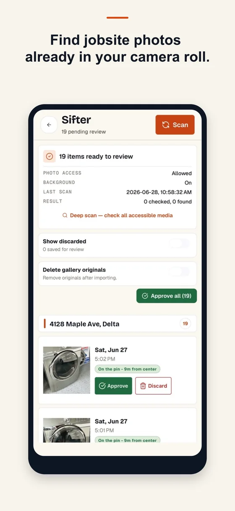
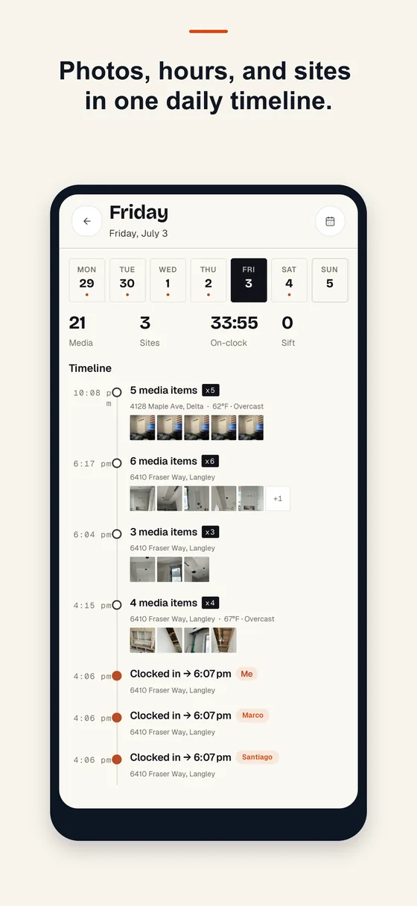

For contractors who take the photos themselves
Every photo, filed to the right job.
Recno records jobsite work the way it actually happens: you shoot, it files. Then it finds the work photos already buried in your camera roll and turns the day into a report you can send before you leave the truck.
Free to download. Recno Pro unlocks Sifter and report export.

SifterPhotos found near a saved job, waiting for review
0
Accounts, logins or servers to set up
3
Report formats: PDF, HTML and CSV
Offline
Capture, file and report with no signal
01 / The photos you already took
Your camera roll is the jobsite record. It just isn't sorted.
Sifter looks through the photos already on your phone, matches the ones taken near a saved job, and stacks them for you to approve. Nothing is filed without you saying yes.
0 Press run scan
A demonstration of how matching works. Your photos never leave the phone.
-
Matched by where you stood
Photos taken inside a saved job's radius get pulled out of the noise. Lunch, receipts and the dog stay behind.
-
You approve every match
Matches sit in a review queue. Approve them into the job, or discard them and Recno stops offering them.
-
It tells you when a stack is ready
Recno lets you know when new matches are waiting. Turn the alert off in Settings and it stays quiet.
-
Optional cleanup
Filing copies the photo into the job. You can switch it to move instead, clearing the original from your gallery — that one is off unless you turn it on.
02 / Shooting on site
Proof, stamped as you shoot.
Open the camera and Recno already knows which job you are standing on. Every shot lands in that job with the details burned in, so a photo still means something six months later.
Tap a field to see what the stamp carries. These are the same switches you get in the app.
-
The right job, preselected
Recno matches your position to a saved job and files the shot there. Standing somewhere new? Pick the job yourself.
-
Draw on it while it is fresh
Circle the crack, arrow the leak, drop a text label. Markups carry through into the reports you send.
-
Notes and voice memos
Add a note, or record a voice memo when your hands are dirty and typing isn't happening.
-
Categories, favorites, video
Tag a shot as demo, rough-in, damage or done. Star the ones that matter. Video works the same way.
03 / What you send
The day, on one page.
Pick what goes in and Recno builds it. Send the PDF to the homeowner, the CSV to your bookkeeper, and keep the history so you can re-send any of it later.
Fair Oak Builders
Photos — 8 of 8
Notes
Rough-in inspected and signed off. Water damage behind the sink base is worse than quoted — photographed for the change order.
Crew hours
Punch list
date,project,worker,hours,cost 2026-08-14,Henderson Kitchen,M. Reyes,8.0,392.00 2026-08-14,Henderson Kitchen,J. Okafor,7.5,337.50
Nothing selected
Toggle sections and formats to see how a report is put together.
-
Your company on the page
Add your logo and company details once. Every report goes out looking like it came from your office.
-
Report history
Reports you build are saved, so you can re-send the one from three weeks ago without rebuilding it.
-
An end-of-day nudge
Optional reminder that opens the day's report with the busiest job already selected, so it goes out the same day.
-
Choose the audience
A client-facing summary and an internal record need different things in them. Choose per report.
04 / Hours and the day
Who was on site, and for how long.
Clock the crew in at the job, watch the day build itself as a timeline, and pull the hours out as a costed sheet when it is time to invoice.

Daily logOne day, photos and hours in order
-
Crew time clock
Clock people in and out against the job. Recno can use the jobsite radius so the right job is already selected.
-
Timesheets and labor cost
Hours roll up by person, by job and by month, with a costed export when you need to bill or run payroll.
-
The daily log
Photos, hours and site notes laid out in the order they happened. Scroll a day and see exactly what went on.
-
Clock alerts
A heads-up if the crew is still clocked in long after the day should have ended, so hours don't run all night.
05 / The rest of it
The parts you find out you need.
Every job, mapped
Save each job with its address and radius. See them all on a map, sort by what is active, and archive the finished ones.
Search that works
Search notes, jobs and reports. Filter a job's photos by category, date or favorite when you need the one shot.
Before and after
Put the demo shot next to the finished shot side by side. The comparison sells the work better than a paragraph.
Punch list
Track what is still open on a job, tick items off as they are done, and drop the list into a report.
Automatic backup
On by default. Backups go to your own private iCloud container, and Recno keeps a copy on the phone when iCloud is not reachable. Switch it off any time.
Built for no bars
Basements, new builds, rural lots. Capture, filing and reports all work with no connection, because the records live on the phone.
06 / Where your work lives
On your phone. Not on our server.
Recno has no accounts and no sync service, because there is nothing on our side to sync to. Here is what leaves the device, and when.
Your records
Photos, notes, hours and reports are stored on the device. We do not receive them and cannot read them.
Backups
With automatic backup on, archives go to Recno's own private iCloud container — between you and Apple, not through us.
Weather stamps
On out of the box: coordinates go to Open-Meteo to fetch the conditions for a shot. Switch weather off in Settings and nothing is sent.
Addresses and places
Searching a job address sends what you type, and roughly where you are, to OpenStreetMap. Naming a job from your location asks Apple for the street address.
Subscriptions
The subscription SDK checks your entitlement with RevenueCat when the app starts. It never receives jobsite content.
Counting installs
An anonymous activation signal you can opt into, off unless you turn it on. No profile, no tracking, no ads anywhere in the app.
Full detail in the privacy policy and delete data pages.
07 / What it costs
Free to record. Pro to sift and send.
Recno Pro is an auto-renewing subscription through the App Store. No account to create either way.
Without Pro
Capture and file photos, the daily log, crew time clock, punch lists and automatic backup.
Recno Pro
$14.99 a month or $99.99 a year. Adds Sifter and report export — PDF, HTML and CSV.
Free trial
A 14-day free trial comes with the annual plan, when Apple marks your account eligible for it.
On the App Store
Get it on your phone.
Recno is out. Download it, open a job, and start shooting — there is no account to create and nothing to set up first.
iPhone, iOS 16 and later. Questions? gsl456789@gmail.com